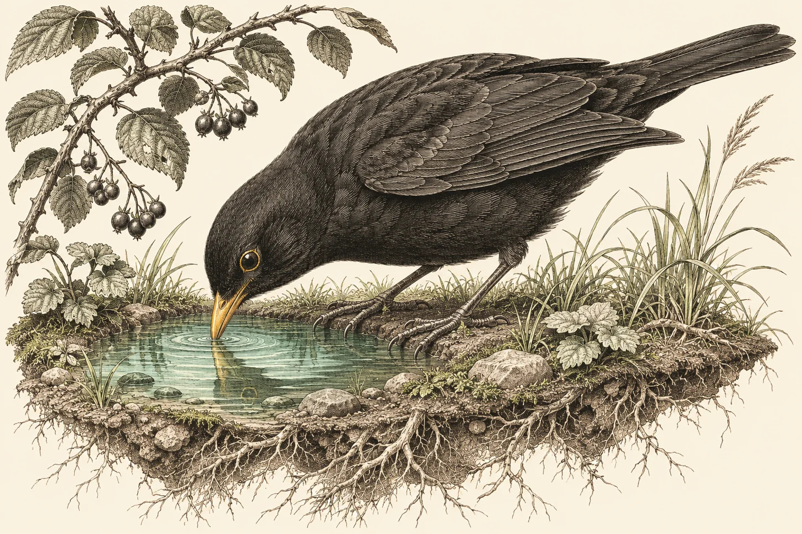

GARDEN FIELD GUIDE
Lattice
Thinking.
A list can grow longer while the connections stay hidden. Look at the same question from several surfaces. What can you see when you hold them together?

WORKED EXAMPLE
The garden atlas
The garden puddle is in the yard. Leaf drip and rain can reach it. From there water can soak into soil, run downhill, evaporate or reach a bird that drinks. See how those six entries form eight routes through the puddle.
Two ways in, two ways out. A bird can drink at a puddle or eat fruit grown with its water. Breath and droppings provide two onward routes from either arrival.
IN PRACTICE
Working with
an open question
In the Lattice Atlas, one examination of a surface produces a mesh. Several meshes form a lattice. The Atlas records how they relate and what becomes visible across them.
A household was also found. The atlas follows the hose back to the barrel and roof, then checks where the water is described as going. Read the two original statements or enter through any of the five gateways.
Read the Next Time field guide ↗Choose a point of entry
Begin with the question that matters. From a bird, look in both directions. What supplies its water? Where can that water go next? Starting at the puddle makes a different set of connections easy to see.
Read the surfaces together
Keep a record of what each view can detect and what its terms hide. “Leaf” could mean water inside the tissue or dew on its surface. A shared word alone cannot carry water between them.
Record what the addition changes
Give each entry a stable reference. Mark a branch, a return, a meeting point, or a finer description wherever it changes an earlier finding. One addition can do several of these things.
Return through another gateway
If two routes explain the same puddle, start at the puddle and trace each route back. Use the register to check what each entry says, then return to the map to see where the routes part. A new observation can change one part of the map while the rest stays usable.
ANOTHER SETTING
Why is the last bus hard to catch?
Imagine a shift ends at 10:00, the bus leaves at 10:05, and the walk from the time clock takes eight minutes. The roster, timetable, and walk each tell a different part. Read together, they expose a three-minute gap even when the shift and bus both run on time. To find out how often people actually miss it, you would need departure and clock-out observations.